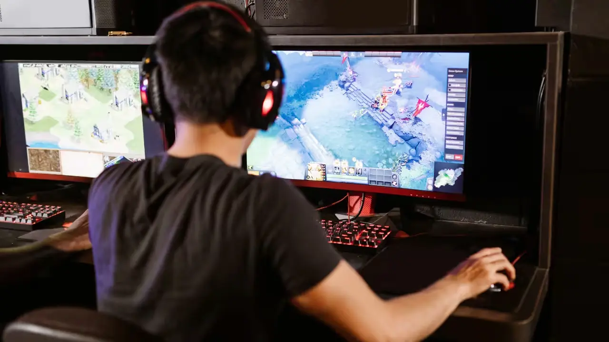
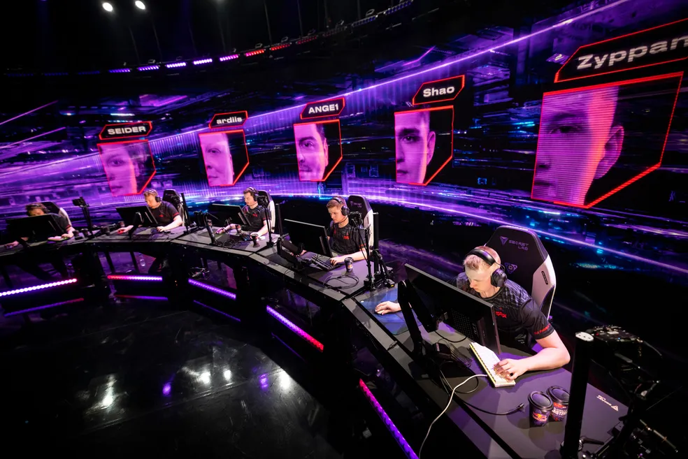
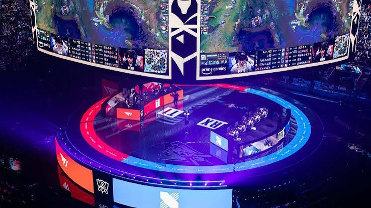
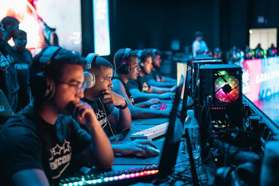

eGames

Os campeonatos são uma das principais partes dos e-sports. Neles, jogadores e equipes competem em busca de títulos, reconhecimento e grandes premiações.
Existem competições de diferentes formatos e tamanhos, desde torneios regionais até grandes eventos internacionais que reúnem os melhores jogadores do mundo.

O Valorant Champions Tour é o principal circuito competitivo de Valorant, reunindo equipes de diferentes regiões.

O Worlds é o principal campeonato de League of Legends, reunindo grandes equipes em busca do título mundial.

Os Majors são alguns dos maiores torneios de Counter-Strike, reunindo equipes de alto nível em competições internacionais.
Torneios internacionais de Valorant que colocam grandes equipes frente a frente.
O Mid-Season Invitational reúne equipes de League of Legends de diferentes regiões durante a temporada.
A Intel Extreme Masters reúne algumas das principais equipes de Counter-Strike em torneios internacionais.
O Rocket League Championship Series é o principal circuito competitivo de Rocket League.
Principal evento internacional de Rainbow Six Siege, reunindo as melhores equipes do cenário.
Grande competição internacional de Free Fire que reúne equipes de diferentes regiões.
Os campeonatos podem possuir diferentes formatos, dependendo do jogo e da organização responsável.
As equipes são divididas em grupos e disputam partidas para definir quem avança.
As equipes classificadas passam para as fases eliminatórias, onde cada partida se torna decisiva.
Os melhores times disputam uma vaga na grande final.
Os dois melhores times se enfrentam pelo título do campeonato.